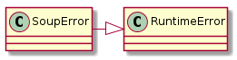
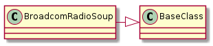
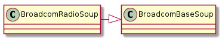
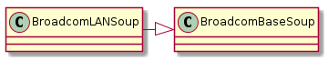
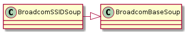

This is a module to hold an interpreter to pull information from the Broadcom html pages. It uses BeautifulSoup to break the html tree apart and then regular expressions to extract the specific bits of text.
I know very little about HTML and web scraping and am making this empirically so I will use this as a lab-report as much as a code-module.
Assuming that there is a response object that was returned from a ‘GET’ request to the radio.asp page, the state of the radio can be pulled using beautiful soup:
soup = BeautifulSoup(response.text)
state = soup.find(attrs={'name':'wl_radio'})
The state variable now should have some text like this:
<select name="wl_radio">
<option selected value="0">Disabled</option>
<option value="1">Enabled</option>
</select>
If you look at the soup.find parameters you can see that it chose the sub-tree that had a tag attribute matching the dictionary I passed in (i.e. I passed in {'name'='wl_radio'} and it pulled the subtree whose parent has the attribute ``name="wl_radio").
The lines with the option tags can be interpreted this way:
- if it has
selectedthen that is the current state of the Wireless Interface that the user would see if this were in a browser- If the
selectedtext is ‘Disabled’, the radio is off, if ‘Enabled’ the radio is on
Warning
Although it looks like a string when you print the output of soup.find what you actually get is a bs4.element.Tag object.
The previous warning means that you cannot search it directly with a regular expression or string search, but you can cast it to a string:
state_string = str(state)
It also means that you can use the find method to burrow your way down to the right child without regular expressions:
select = soup.find(attrs={'name':'wl_radio'})
radio_state = select.find(attrs={'value':'0'})
state_string = radio_state.text
The variable state_string now contains the (unicode) string ‘Disabled’. You could also do it as one line:
state_string = soup.find(attrs={'name':'wl_radio'}).find(attrs={'value':'0'}).text
One thing that is not mentioned here is which interface we’re looking at. It turns out that you can’t tell just by looking at most of the sub-trees. Only the ‘wl_unit’ sub-tree can tell you – whichever interface it says is selected is the interface whose values are being shown in ‘wl_radio’.
But it turns out that the previous code does not work... well, it does, it is just meaningless. To know which interface is disabled you need to find the ‘selected’ tag – all I did was find the text in the first entry in the drop-down menu, not which item is currently selected. As an example of pulling text it works, so I will leave it in, but see the next section to find out how to get the actual state.
So, it appears that the Broadcom web interface adds a selected="" tag to drop-down options that are currently selected. You can get the surrounding tags but BeautifulSoup seems to not be able to find the selected attribute (or it returns the wrong tag). I have not figured out why, but this may be where switching to string searches and regular expressions would make sense.
A rough sketch to match it might be:
<anything> = ?anything in the alphabet?
<everything> = {<anything>}
<boundary> = ?word boundary?
<selected> = <boundary> + 'selected' + <boundary> + <everything> + '>' + (<everything>) + '<'
The use of <everything> following the literal ‘selected’ might seem too aggressive, but I have found that the tags change over time (the attributes appear in different order). There is probably a more specific way to do it, but I’m also re-using the expression on multiple pages and exhaustively testing it seems impratical (plus I don’t feel like it).
In the code I use a named expression:
SELECTED_EXPRESSION = r'\bselected\b.*>(?P<{0}>.*)<'
So, for instance, to get the current state of the Wireless Interface chosen when you pulled the html, feed it to a BeautfulSoup instance (call it soup) and do something like this to get the current state:
wifi_state = SELECTED_EXPRESSION.format('wifi_state')
radio_state_menu = soup.find(attrs={'name':'wl_radio'})
state = re.search(wifi_state, str(radio_state_menu)).group('wifi_state')
This is the drop-down that selects the current interface shown to the user (and which is what you need to choose if you are making changes or queries that are specific to a band).
The output of soup.find(attrs={'name':'wl_unit'}):
<select name="wl_unit" onchange="submit();">
<option selected value="0">(00:90:4C:09:11:03)</option>
<option value="1">(00:90:4C:13:11:03)</option>
</select>
The extraction of the enabled interface (indicated by the selected attribute) is slightly different in this case from the previous. Here we want the right-hand-side of the ‘value’ expression. There might be other ways of getting it, but the two ways I figured out:
Pure python:
expression = re.compile(r'value="(?P<interface>0|1)"')
lines = str(soup.find(attrs={'name':'wl_unit'})).split('\n')
match = expression.search([line for line in lines if 'selected' in line][0])
enabled_interface = match.group('interface')
This works, but I also explored getting it using pyparsing so I am going to document it here.
A sketch of the part of the text we are interested in:
selected_literal = Literal('selected')
value_equal = Literal('value=')
quote = Literal('"')
value = oneOf('0 1'.split())
selected = selected_literal & value_equal + quote + value.setResultName('interface') + quote
text = str(soup.find(attrs={'name':'wl_unit'}))
enabled_interface = selected.searchString(text)[0].interface
The reason why this is an improvement over a pure-regular expression version (not the previous example with a for-loop) is that the & symbol in pyparsing means look for both the left-hand-side and right-hand-side expressions but in any order, ignoring whitespace (e.g. A & B matches both ‘A B’ and ‘B A’ but not just ‘B’ or ‘A’ and not ‘A C B’). For one example it might not seem like it is an improvement over the for-loop style of searching, but presumably if many different types of searches need to be made, a grammar would be built and the pyparsing method more closely resembles one and so might reduce errors.
Right now I am not sure what kind of errors are going to come up, but for runtime errors that I anticipate I will raise a SoupError to try and make it more obvious what happened.

Although I have decided to move to aggregation over inheritance, the soups seem to have some common code that is just easier with inheritance – so here we go again once more for the last time.
BroadcomBaseSoup([html]) |
A base-class to hold some code common to the soups |
BroadcomBaseSoup.html |
The html for soup |
BroadcomBaseSoup.soup |
A beautiful soup object created from self.html |
BroadcomBaseSoup.selected_expression |
Compiled regex to get text from selected option (use SELECTED as name for group) |
This is a class to hold BeautifulSoup for the Broadcom Access point radio.asp page. I had hoped to do a single class for the Broadcom Web Interface but inspecting the pages reveals that the names have conflicts which would likely make it too confusing (the exception being the SSID which is on a different page but gets thrown in here anyway).
There are different kinds of queries going on in the BroadcomRadioSoup and since I’m already having trouble remembering what is going on, I’ll document some of them here.
The query:
self.soup.find(attrs={'name':'wl_unit'})
Returns a tag which is an HTML sub-tree whose root has the name attribute that was passed in to the find call (‘wl_unit’ in this case). See the Wireless Interface section above for a sample output. Because it is a tag, you can do further searches within it. Use the ``find`` method to narrow the HTML tree down to just the part you are interested in.
The query:
self.soup.find(attrs={'name':'wl_country_code'}).option['value']
First uses find to narrow the tree down to the subtree:
<select name="wl_country_code" onchange="wl_recalc();">
<option selected value="US"></option>
</select>
Within this sub-tree the tag named option has an attribute named value, so the .option['value'] returns the right-hand-side of value="US". Use this syntax to get text from tag-attributes (as opposed to text between tags).
This query:
self.soup.find(attrs={'name':'wl_radio'}).find(attrs={'value':'0'}).text
First uses find to narrow the HTML tree down to the ‘wl_radio’ subtree (a BeautifulSoup tag):
<select name="wl_radio">
<option selected value="0">Disabled</option>
<option value="1">Enabled</option>
</select>
Then it uses find again to get the option tag that has the value="0" attribute (the ‘0’ indicates this is the first item in the drop-down menu):
<option selected value="0">Disabled</option>
Then uses .text to get the state of the interface:
Disabled
Use ``.text`` to get the text between tags.

This is the interface for those who want to use this to get text from an html input.
BroadcomRadioSoup(*args, **kwargs) |
A holder of BeautifulSoup |
BroadcomRadioSoup.html |
The html for soup |
BroadcomRadioSoup.mac_24_ghz |
The 2.4 GHz MAC address text from the wl_unit |
BroadcomRadioSoup.mac_5_ghz |
The 5 GHz MAC address text from the wl_unit tag |
BroadcomRadioSoup.country |
Gets the current country setting |
BroadcomRadioSoup.interface_state |
Get the state of currently selected radio (enabled or disabled) |
BroadcomRadioSoup.channel |
Gets the channel for the currently selected interface |
BroadcomRadioSoup.bandwidth |
The bandwidth setting (for both bands) |
BroadcomRadioSoup.sideband |
Gets the sideband (only for 40GHz) |
This is the interface for those who want to add to the Soup.

BroadcomRadioSoup(*args, **kwargs) |
A holder of BeautifulSoup |
BroadcomRadioSoup.wireless_interface |
The wl_unit sub-tree |
BroadcomRadioSoup.get_value_one(tag) |
Gets the value=‘1’ tag from a tag (subtree) |
BroadcomRadioSoup.get_value_zero(tag) |
Gets the first value=‘0’ tag from a tag (subtree) |
Since the Radio Soup is getting so big I am going back to the idea of one soup per page. The only interesting thing I can think of for this page is the DHCP server state (to make sure it is off). I was going to get the IP address but since you need the IP address to get to the server to ask it its IP address I decided not to.

BroadcomLANSoup(*args, **kwargs) |
A soup for the lan.asp page |
BroadcomLANSoup.dhcp_state |
The selected DHCP state |
Continuing with the one-class one-page pattern...

BroadcomSSIDSoup(*args, **kwargs) |
A soup for the ssid.asp page |
BroadcomSSIDSoup.ssid |
Gets the SSID for the currently selected interface |
This is a scratchpad for BeautfulSoup commands to get specific things.
To get the DHCP state (from lan.asp) (for the internal network, use lan1_proto for the guest network):
selected_expression = r'\bselected\b=.*>(?P<{0}>.*)<'.format('DHCP')
lan_proto = soup.find(attrs={'name':'lan_proto'})
state = re.search(selected_expression, str(lan_proto)).group('DHCP')
Enabled or Disabled.